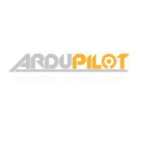
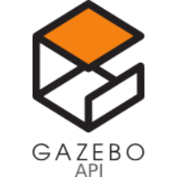

VTOL & fixed-wing aircraft
Fixed-wing, QuadPlane and tiltrotor development, from V-tail, pusher and twin-motor airframes through propulsion integration, SITL, real flight tests and missions.
Explore the work →Engineering portfolio
UAV & Avionics Systems Engineer
I design, integrate and troubleshoot uncrewed systems, from aircraft and ground robots to unmanned surface vehicles. My work connects avionics, embedded electronics and practical engineering design.

I work across aircraft, ground robotics and marine systems, connecting airframe and electrical design with autopilot integration, diagnostics and practical test support.
Aircraft, ground robotics, marine systems and avionics. Design, modeling, integration and test work are presented together within each platform portfolio.
Fixed-wing, QuadPlane and tiltrotor development, from V-tail, pusher and twin-motor airframes through propulsion integration, SITL, real flight tests and missions.
Explore the work →
FPV, cinewhoop, quadcopter and heavy-lift work across 2 to 42-inch platforms, covering propulsion, integration, calibration, tuning and missions, alongside helicopter diagnostics.
Explore the work →
Complete drone-rover system development and testing, combining aerial and ground autopilots, motor control, communications, docking and failsafe behaviour.
Explore the work →
USV / ASV development, from architecture and propulsion control to autopilot navigation, onboard vision and water testing.
Explore the work →
Companion-computer interfaces, payload video, engineering design review and vision-based landing architecture.
Explore the work →Edited public excerpts from client reports, showing the analysis behind the configuration and diagnostic work.






UAV & Avionics Systems Engineer
Hassan II University of Casablanca · Bac+5
Université Sidi Mohamed Ben Abdellah
FARASHA SYSTEMS | Rabat, Morocco
FARASHA SYSTEMS | Rabat, Morocco
Upwork, Fiverr and direct clients
CAPGEMINI ENGINEERING | Casablanca
Onshape · ArduPlane / PX4 · Gazebo / SITL · DJI O4 Pro
Cube / Pixhawk · ArduPilot / PX4 · 3D printing
2-42 inch platforms · ArduCopter / INAV / Betaflight · PID / FFT
ArduRover · Waterjets · Jetson Nano · A8C · GNSS / RTK
ArduPilot / ArduRover · CUAV X7 · VESC · MAVLink
Jetson / Raspberry Pi · YOLOv8 / ByteTrack · RTSP
Flight Control & Avionics: ArduPilot, PX4, INAV, Betaflight; Mission Planner, QGroundControl; Gazebo/SITL, MAVLink, PID/FFT and log analysis.
Embedded & Interfaces: C/C++, Python, VHDL, Linux, Git; STM32/ESP32, Jetson/Raspberry Pi; CAN/DroneCAN, UART, SPI, I2C, Ethernet.
Vision & Navigation: YOLOv8, ByteTrack, RTSP/GStreamer; A8C gimbal, GNSS/RTK, telemetry, AIS and ADS-B workflows.
Electronics & Prototyping: ESC/VESC, BMS, power distribution; KiCad/Altium familiarity; FDM 3D printing and component compatibility.
CAD & Simulation: Onshape, AutoCAD Electrical; Gmsh mesh preparation, CNC files, BOMs and assembly planning.
Design & Communication: Photoshop, Illustrator; graphic design, engineering consultations and technical coordination.
Leadership: ROBOTHINGS Founder/President (2023-2025); ENACTUS FSTM Marketing & Graphic Design Lead (2022-2023).
Hobbies: Surfing, reading and graphic design.
Languages: Arabic native, English and French fluent, German basic.